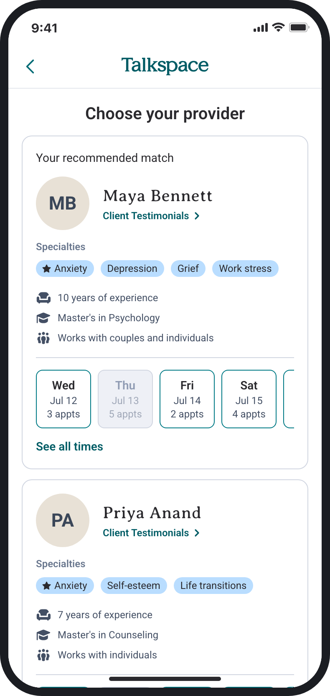

Talkspace Provider Reviews
Redesigning the provider card so members can choose a provider with confidence.
Overview
As Talkspace's product design intern, I designed how client reviews help members choose a provider. A link to a full reviews page is in development now. After the handoff, I designed and tested a card that works for every provider, regardless of how many reviews they have.
Problem
40%of auto-matched members never reach a first session, even with the best matching method.
Solution
Let members choose their provider, and show what clients say on the card they choose from.
Before
With this project
01 · The idea
Members who choose their own provider show up more, so I used reviews to help them choose
Members who switched to a provider they picked completed a first session at 73–76%. The card lists the same facts for every provider, and none of it describes what working with them is like. Client reviews can fill that gap, because they come from people who have already worked with the provider.
Switchers are more proactive, so it isn't one-to-one, but the gap pointed to choice.
First-session completion, range across matching methods. Source: Talkspace data team, July 2026.
02 · Three directions
I tested three ways to show reviews on the card
I wrote a PRD first. Its main rule was to show what clients wrote and never a star rating, since a visible 4.4 can unfairly hurt a good provider. I tested the three directions with 18 participants across 3 rounds, and all 18 said the reviews strongly influenced their choice.

AI summary Best reaction
Easiest to scan, but members must trust AI.

Review preview
A real voice, but may not represent most clients.

Review snippets
Several voices, but fragments can feel cherry-picked.
03 · The constraint
Then our PM flagged that 92% of providers had too few reviews to fill the card
65% had just one review, and many were blank or as short as "Aaron IS GREAT." A review-led card would look empty for most providers and penalize new ones. It had to work the same with 15 reviews or none.
1,461 providers · 5-star review export
04 · The MVP
Our PM and I compromised on a link to a full reviews page, keeping reviews off the card for now
A "Client Testimonials" link gives every provider the same experience. It was the lightest version that could ship and still shows members reviews. The cost: one more tap.
In the design review I led, PMs, engineers and data researchers renamed the "Read 15 reviews" link and shaped the no-reviews state.



05 · After the handoff
I redesigned the card so providers with few or no reviews get a fair chance
The link was the right call for the review data Talkspace had. After the handoff, I looked further ahead: once there are enough reviews to put on the card, how do providers with few or none avoid looking worse next to providers with many?
My answer was one green block, in the same place and at the same size on every card, so no card looks empty. What fills it depends on how many relevant reviews a provider has. With 3 or more, it's an AI summary of what those clients say. With fewer, a summary would just reword one or two people, so the block shows the provider's own words about how they work. Established providers earn trust through their clients; new providers earn it in their own words.
I also wrote each summary around the concern a member gave at intake, so it can surface a provider whose clients describe helping with it, even when it isn't a listed specialty. The idea came from this answer in testing:
"If they were able to help someone else with the same issues, hopefully they could help me."
Test participant


AI summary; same-concern reviews first.


Her words first, then her reviews.


His words and verified training.
06 · Testing the redesign
Testing showed new providers can win in their own words, but the card still rewarded volume and hid the open times
I tested the redesign with 9 people in October. Each one picked a therapist from a list of five providers with different numbers of reviews, then answered questions about what they saw and why they chose.
4 of 9
would book Sam, who has no reviews
Their reasons came from what he wrote, like "I can imagine what the sessions would look like." One more person chose Priya, who has only a few reviews, because her card explained her approach.
7 of 9
could tell the two green blocks apart
7 read Lisa's as an AI summary of client reviews, and 7 read Sam's as his own words. Trust in the summary was mixed: 3 suspected it showed only the good reviews.
4 of 9
chose without opening a single provider page
The card carried the decision, which backs putting reviews on it. Three chose on reviews from people like them: "the reviews related to my experiences and what I would be looking for."
6 of 9
felt surer with open times on the card, as the current design shows them
All 6 pointed to the times, which my redesign had moved behind a button, even though they had just used the redesign.
5 of 9
chose Jane, the provider with the most clients and years
They named "experience and number of patients" and "she was popular." I meant the "200+ clients" line as quiet proof. It became a volume signal that new providers can never have.
2 of 9
read Sam's words as a client's review
One then judged him for having "one review." Quote marks usually mean a testimonial, so his own words were borrowing trust they hadn't earned.
These are early signs, not proof: 9 people, no comparison group, and 4 of them work in UX. My setup also skewed the Sam result. He's a man while 6 of 9 wanted a woman therapist, and his card was always last, which one participant read as "least popular."
07 · What I'm changing
I'm putting the open times back on the card and removing the one number new providers can't earn
Each change answers a finding above. The test also showed me what to fix in the test itself before I run it again.
In the design
- Show open times on the card again. 6 of 9 preferred the version that showed them.
- Take "clients helped" off the card. It was the volume signal people chose on, and new providers can't have it.
- Mix new providers into the list. Card order reads as a ranking, so a new provider shouldn't always be last.
In the next test
- Vary the new provider's gender and position. Then a pick, or a pass, is about the card.
- Change one thing between versions. Both lists show open times, and only where the reviews sit differs.
Where it stands
The reviews link is in development, and the card redesign has had one test
No data yet; Talkspace will track first sessions and three sessions in 30 days.
What I learned
The best direction isn't always the most ambitious one. I wanted reviews on the card, but most providers didn't have enough, so we chose the link first and I designed toward the card after.
With more time
A/B test my card against the current one with real members. Do more of them book a new provider, and actually show up for the first session?